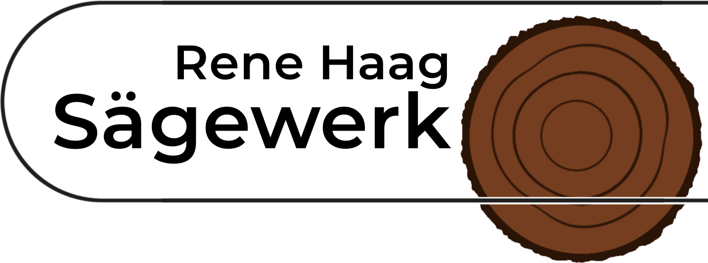

<nav>
  <!-- Navbar -->
  <div class="w-full bg-white shadow-md sticky top-0 left-0 h-16 z-10">
    <div class="h-full flex items-center justify-between px-4">
      <!-- Hamburger Icon -->
      <button id="hamburger" class="space-y-1" (click)="toggleMenu()"
              aria-label="Toggle Navigation Menu">
        
      </button>

      <!-- Right Logo -->
      
    </div>
  </div>

  <!-- Dark Transparent Overlay -->
  @if (isMenuOpen) {
    <div
      class="fixed inset-0 bg-black/50 z-15 transition-opacity duration-300"
      (click)="toggleMenu()"
      [attr.aria-expanded]="isMenuOpen"
    ></div>

  }


  <!-- Side Menu -->
  <div
    id="sideMenu"
    class="fixed top-0 left-0 h-full w-[65vw] bg-white shadow-lg z-20 transition-transform duration-300 ease-in-out"
    [ngClass]="{
    'translate-x-0': isMenuOpen,
    '-translate-x-full': !isMenuOpen
  }"
  >
    <!-- Side Menu Content -->
    <div class="pt-16 px-6 flex flex-col items-center text-center space-y-6 h-full overflow-y-auto text"
         [attr.aria-hidden]="!isMenuOpen">

      <!-- Logo in Menu -->
      

      <!-- Navigation Tabs -->
      @for (navtab of navtabs; track $index) {
        <div
          class="flex items-center space-x-2"
          [ngClass]="{
          'border-2 px-[4px] border-solid': navtab.selected
          }"
          (click)="emit(navtab)"
          [attr.aria-label]="'Select Tab ' + navtab.title"
        >
          <a
            class="text-xl font-semibold text-center"
            [id]="navtab.title + '-navigation'"
          >
            {{ navtab.title }}
          </a>

          @if (navtab.submenus != null) {
            
          }
        </div>

        <!-- Expanded Subtabs -->
        @if (navtab.expanded) {
          <div id="expanded-tabs"
               class="mb-8 flex flex-col items-center space-y-3 w-full">
            @for (subtab of navtab.submenus; track $index) {
              <div
                class="flex justify-center"
                [ngClass]="{
                'border-b-2 border-solid border-black px-[4px]': subtab.selected
                }"
                [attr.aria-label]="'Select Subtab ' + subtab.title"
              >
                <a
                  class="text-md font-semibold text-center"
                  [id]="subtab.title + '-navigation'"
                  (click)="emit(navtab, $index)"
                >
                  {{ subtab.title }}
                </a>
              </div>
            }
          </div>
        }
      }
    </div>
  </div>
</nav>
